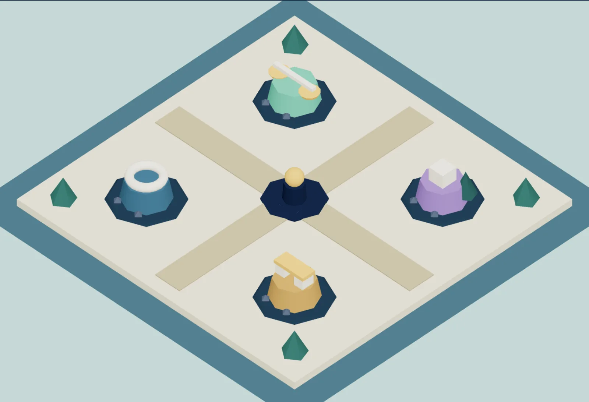

پالت فعلی خوب است، ولی طلا همزمان «برو»، «شمارهٔ بخش»، «لینک فعال» و «پاداش» است. پیشنهاد: طلا فقط برای لحظهٔ گشودهشدن بماند؛ نعنایی یعنی برابری تأییدشده، مرجانی یعنی تصحیح ملایم، بنفش یعنی مجهول. چهار رنگ جزیرهها هم از دل صحنهٔ واقعی بازی وارد توکنها میشوند تا سایت و جهان یکی شوند.
#14263E
#F7F4EC
#3E9E82
#D9A34A
#C96B57
#7C63A6
#3B6479
--region-1..4
letter-spacing: -0.065em روی تیتر ۸٫۸rem، اتصال حروف فارسی را بههم میزند. وزن ۸۰۰ Vazirmatn در بسته موجود است و هنوز وارد اپ نشده؛ با همان وزن و بدون فشردهسازی، تیتر هم محکمتر است و هم خواناتر. زیرش یک مقیاس تایپ توکنشده میآید تا بیست clamp() پراکنده جای خود را به ریتم واحد بدهند.
اتصالها تنگ، نقطهها نزدیک، در اندازهٔ بزرگ آشکار.
همان اندازه، نفس بیشتر، text-wrap: pretty.
--step-6 · 800 · 1.2--step-4 · 800 · 1.25--step-0 · 400 · 1.9۰۱ … ۰۸ / 2x + 4 = 12
امروز هشت بخش دربارهٔ «چرا برابری مهم است» حرف میزنند. پیشنهاد: یک معادلهٔ واقعی، حلشدنی و کوچک در همان صفحهٔ نخست، ساختهشده با همان موتور کسری دقیق، بدون WebGL. چهار نشان روی تصویر، مستقیم به همان جزیرهها وصلاند؛ تصویر پسزمینه همچنان از صحنهٔ واقعی بازی است.
در سرزمینی که توازن از دست رفته، هر برابری یک پل است. پیش از خواندن توضیح، یکی را خودت متوازن کن.
پایهٔ هفتم · بدون حساب کاربری · پیشرفت در همین مرورگر

جزیرهٔ تعادل · ۰۱ و ۰۲ جنگل مجهول · ۰۳ و ۰۴ غار وارون · ۰۵ و ۰۶ قلعهٔ معادله · ۰۷ و ۰۸ فصل ۰۱ / ۰۴عمل یکطرفه تیر را کج نگه میدارد؛ عمل دوطرفه با یک فنر آرام به تراز برمیگرداند؛ لحظهٔ برابری یک پالس نعنایی یکباره میگیرد. همان هشت کد خطای موتور، اینبار در محل حادثه دیده میشوند، نه در یک جعبهٔ متن. امتحانش کن:
دو کفه همارزشاند.
در حالت «حرکت کمتر»، چرخش حذف میشود و فقط رنگ و متن وضعیت تغییر میکند.
بهجای یک قانون سراسری «محو شدن ۰٫۷۸ به ۱» برای همهٔ بخشها، حرکت را به لحظهٔ آموزشی گره بزن: ورود قهرمان، کشیدهشدن خط تعادل در آغاز فصل، و حلقهٔ تأیید بعد از جایگذاری. هیچکدام تکرارشونده نیستند، هیچکدام کانتینر حاوی دکمه را جابهجا نمیکنند.
خطوط تیتر با ماسک و ۸۰ms فاصله. تصویر از ۱٫۰۴ به ۱. فقط بار نخست، ۷۲۰ms.
خط تعادل از راست کشیده میشود، بریدگی «=» وسط آن پدیدار میگردد. ۴۸۰ms.
بعد از جایگذاری در معادلهٔ اصلی: یک حلقهٔ نعنایی، یکبار، ۶۲۰ms. عدد واقعی XP میشمرد.
| لحظه | مدت | هدف آموزشی | معادل بیکنار |
|---|---|---|---|
| کج شدن ترازو | 420ms |
نشان دادن تغییر یکطرفه | رنگ مرجانی + متن خطا |
| درج گام معادله | 360ms |
همزمانی عمل روی دو طرف | خط جدید بدون جابهجایی |
| افشای تیتر کوتاه | 720ms |
جهت خواندن فصل | متن کامل از ابتدا |
| حلقهٔ تأیید | 620ms |
ثبت برابری واقعی | تغییر رنگ نعنایی |
صحنهٔ فعلی چهار نشان همفاصله و همزماندر دسترس دارد؛ یعنی «منوی چهارتایی»، نه «سفری که پلهایش یکییکی باز میشود». پیشنهاد: چهار ایستگاه روی یک مسیر پیوسته، هشت گرهٔ مرحله، و پلهای شکستهٔ پیشرو. هر تأیید موفق یک تختهٔ واقعی به پل اضافه کند، چون وضعیت از همان completedIds ذخیرهشده میآید، نه از انیمیشن تزیینی.
امروز خطوط حل معادله با عوضشدن state فوری ظاهر میشوند؛ یعنی دقیقاً همان چیزی که محصول میخواهد آموزش بدهد، پنهان است. هر گام باید با یک هایلایت آینهای روی دو طرف، حذف جمله و ورود خط بعدی همراه باشد. ریل کناری، تاریخچهٔ گامها و امکان برگشت را نگه میدارد. دکمه را بزن:
بهجای سایهٔ نوری سراسری روی تقریباً هر کنترل، واریانتهای صریح: اولیه، ثانویه، سومین و تأیید. گوشهٔ ۹px، هدف ۴۴px و فوکوس ۳px همانطور که تستها تضمین کردهاند، دستنخورده میمانند.